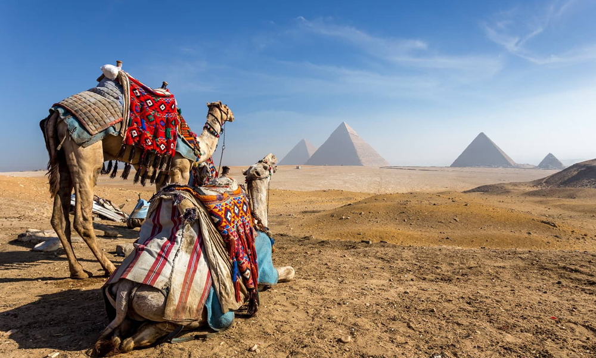
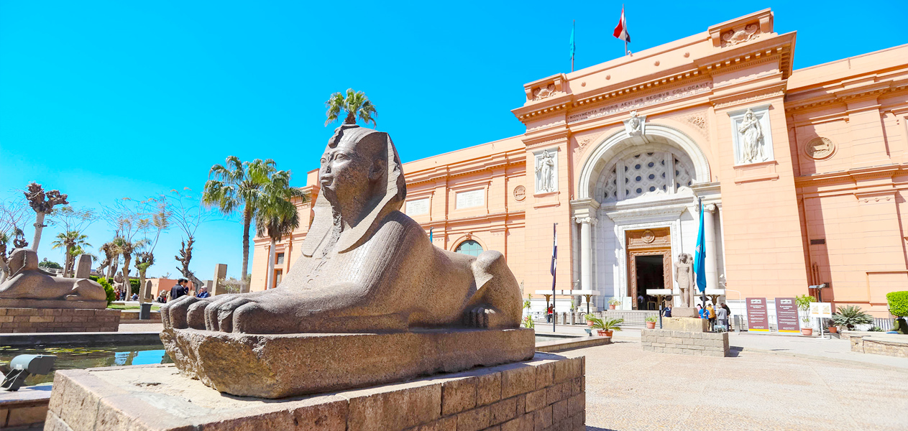
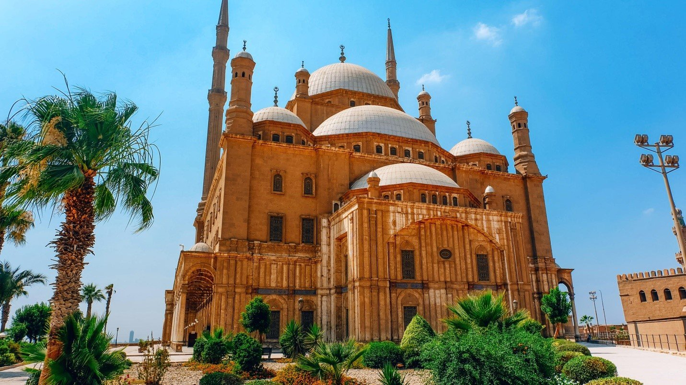
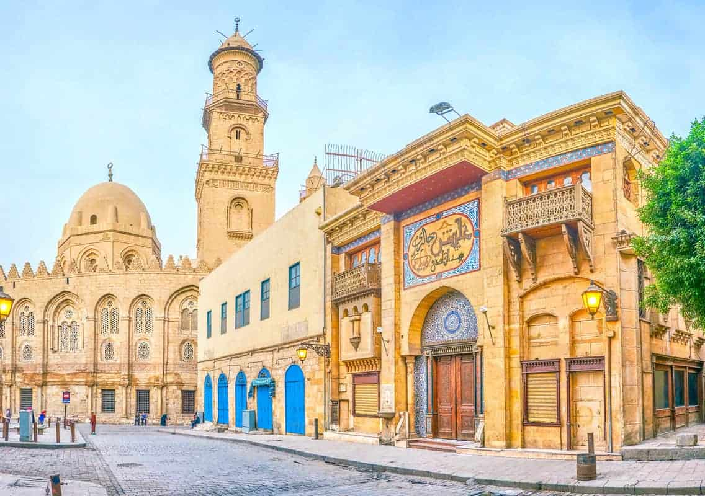

Discover the rich history and vibrant culture of our city
places
Pyramids of Giza:
These ancient wonders are one of the most iconic landmarks in the world.
The Great Pyramid of Giza is the oldest and largest of the three pyramids,
and visitors can also see the Sphinx nearby. Marvel at the awe-inspiring
architecture of the Pyramids of Giza and take a camel ride around the iconic
structures. Venture inside the Great Pyramid to explore its mysterious
chambers and intricate passageways for an unforgettable adventure.

Egyptian Museum:
Located in Tahrir Square, the Egyptian Museum houses a vast collection of
artifacts, including treasures from Tutankhamun's tomb, mummies, and ancient
Egyptian art. Embark on a journey through time as you explore the vast
collection of artifacts at the Egyptian Museum. Don't miss the chance to attend
a guided tour or lecture to gain deeper insights into Egypt's fascinating
history and archaeology.

Khan El Khalili Bazaar:
This historic market is a labyrinth of narrow streets filled with shops selling
traditional crafts, spices, jewelry, and souvenirs. It's a vibrant place to
experience Cairo's culture and haggle for unique items. Dive into the bustling
atmosphere of Khan El Khalili Bazaar and practice your bargaining skills as you
shop for souvenirs, spices, and traditional handicrafts. Indulge in the flavors
of Egyptian street food and sip on aromatic tea at one of the charming cafes lining
the streets.
Saladin Citadel:
Situated proudly atop the Mokattam Hills, the Saladin Citadel stands as a testament
to Cairo's rich history and resilience. Built by the legendary Muslim leader Saladin
in the 12th century, this formidable fortress offers visitors a captivating journey
through time. You will discover its fascinating military history and architectural
wonders. Also visit the Mosque of Muhammad Ali to admire its stunning Ottoman-era
design and panoramic vistas of Cairo.

Muizz Street:
Known as one of the oldest streets in Cairo, Al-Muizz Street is lined with historic
buildings, mosques, and medieval gateways. It's a great place to take a walk and admire
the stunning architecture. You can also visit workshops and studios where skilled
craftsmen and women practice traditional crafts such as pottery, woodworking, and
metalworking, and even try your hand at creating your own masterpiece.

Hanging Church (Saint Virgin Mary's Coptic Orthodox Church):
This historic church, also known as Al-Muallaqa, is one of the oldest and most iconic Coptic
churches in Egypt. Its significance lies not only in its age but also in its architectural
beauty and religious importance. The church is renowned for its exquisite Coptic artwork,
including intricate wood carvings, vibrant icons, and ancient frescoes depicting biblical scenes
and saints.
Nile River Cruise:
Experience Cairo from the water by taking a dinner cruise along the Nile River. Enjoy traditional
Egyptian cuisine, live music, and breathtaking views of the city skyline and illuminated landmarks.